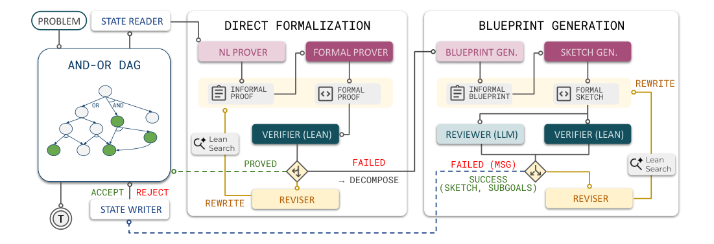
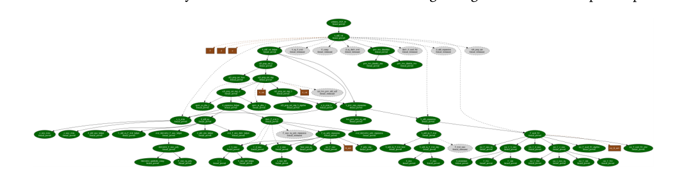
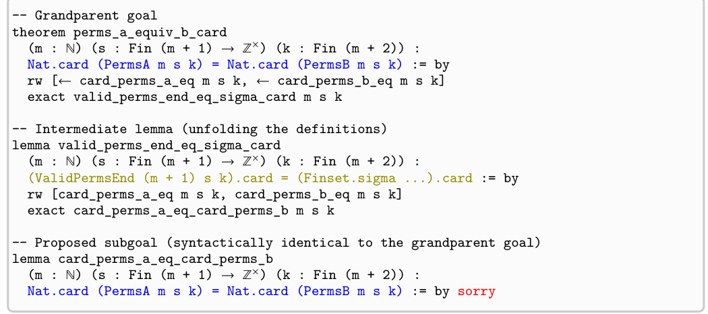

Agentic proof workflow
把人类 formalization 的 blueprint 习惯转成可搜索的 DAG：先 direct proving，失败后分解成 verified sketch 与 subgoals。
这篇论文的核心判断是：通用 LLM 的形式化数学瓶颈不只是“不懂 Lean”，而是很难一次性生成长而正确的证明。 LEAP 用 Lean compiler、informal blueprint、AND-OR DAG memory 和 LLM reviewer 组成 agentic proving loop， 让 Gemini-3.1-pro 在 Putnam 2025 上完成 12/12，并在 Lean-IMO-Bench 上显著超过 one-shot formalization。
把人类 formalization 的 blueprint 习惯转成可搜索的 DAG：先 direct proving，失败后分解成 verified sketch 与 subgoals。
将 IMO-Bench 的 60 道题转成 Lean statements，覆盖 Basic / Advanced 与代数、组合、数论、几何四类。
Putnam 2025 达到 100% solve rate；Lean-IMO-Bench Basic / Advanced 分别为 83.3% / 56.7%，但 A5 需约 3.0k LLM calls。
LEAP 是一个面向 Lean 4 的 agentic theorem proving framework。它不训练专用 prover，而是利用通用 foundation model 的 informal reasoning、instruction following、tool use 和 iterative self-refinement，把证明构造拆成“自然语言计划 → Lean sketch → compiler verification → DAG memory → reviewer-guided backtracking”的循环。
对形式化数学来说，关键不是让模型一次性写出完整 Lean proof，而是让模型在一个带 verifier、memory、reviewer 的环境中持续构造和修正 proof DAG；当 accepted sketch 满足 $l_1 \land l_2 \land \cdots \land l_k \Rightarrow g$，并且每个 child lemma 最终被 Lean 证明后，parent goal $g$ 才被关闭。
现代 LLM 在 informal math reasoning 上已经很强，但自然语言证明有两个硬问题：逻辑漏洞很难自动发现，长证明的人工 peer review 成本很高。 论文用 Kepler conjecture 的审稿与后续 formal verification 作为例子，说明“能写出看似合理的证明”和“能被机器核验”之间仍有巨大距离。
Formal mathematics 把正确性判定交给 Lean / Isabelle / Coq / HOL Light 这样的 proof assistant，理论上能给出 kernel-level 的严格验证。 但现实瓶颈是：LLM 生成的 Lean proof 常常在 syntax、type、library lemma、proof state 管理上失败，尤其是长、多步、非 routine 的 olympiad-level proof。
许多前沿系统依赖 specialized prover model 或 formal corpus fine-tuning，例如 AlphaProof、DeepSeek Prover V2、Seed Prover、Goedel-Prover-V2。 LEAP 的立场更激进：通用 LLM 虽然 one-shot 很弱，但它具备 informal planning、compiler error interpretation、tool interaction 和 self-refinement； 如果 scaffold 正确，不必把所有能力都压进一个 specialized prover。
MiniF2F、PutnamBench 等 benchmark 已经越来越饱和或覆盖侧重点不同。Lean-IMO-Bench 选择短 statement 但证明高度非 routine 的 IMO-style problems， 更强调复杂分解、长链依赖和跨数学领域泛化。它包含 60 题：Basic 30 题、Advanced 30 题，并由 Lean experts 手工 formalize 和 verify statements。
LEAP 的核心状态是 AND-OR DAG。OR node 表示一个待证明 theorem / lemma；AND node 表示一种已被 Lean 接受的 decomposition sketch， 它把 parent goal 约化为若干 child subgoals。系统持续搜索这个 DAG，直到 root goal 的某条 AND decomposition 下所有 child OR nodes 都被证明。
| 符号 / 对象 | 含义 | 在 LEAP 中的角色 |
|---|---|---|
| $g$ | Lean theorem 或 lemma statement | 一个 proof goal，也是 OR node |
| $p$ | 完整 Lean proof | 不依赖新 proposed lemmas；Lean 通过后关闭 goal |
| $s$ | formal proof sketch | 证明当前 goal，但允许 newly proposed lemmas 处保留 `sorry` |
| $L=\{l_i\}_{i=1}^{k}$ | 由 blueprint 生成的 subgoals | 成为 child OR nodes；全部证明后 parent sketch 生效 |
| $D=(V,E)$ | AND-OR proof DAG | 保存 proof progress、dependency、lemma reuse 和 search memory |
| $R_{\text{Lean}}$ | Lean compiler / verifier | 给出 hard correctness signal：type-check 或 error message |
| $R_{\text{LLM}}$ | LLM reviewer | 判断 decomposition 是否真的变简单、相关、可推进 |
如果每次 decomposition 都形成独立 tree，重复 subproblem 会被反复发现和证明。DAG 的 memoization 让相同或可复用的 intermediate lemma 成为共享节点， 从而把多个 proof branches 汇聚到同一依赖。作者强调两个效果：monotone refinement 保持全局 proof plan 的稳定依赖顺序； anticipatory lemma planning 允许上层 blueprint 提前提出后续可能有用的 auxiliary lemmas。
设当前 goal 为 $g$，blueprint 提出 subgoals $l_1,\ldots,l_k$。LEAP 不是直接相信自然语言计划，而是要求 Lean 接受一个 sketch：
$$\text{LeanAccept}\left(s: l_1,\ldots,l_k \vdash g\right)=1.$$
当 $l_1,\ldots,l_k$ 后续分别被完整 Lean proof 关闭时，DAG 中对应 AND node 才能关闭 parent $g$。这使 natural-language blueprint 只负责提出方向， correctness 仍由 Lean kernel 兜底。
Backend LLM 是 Gemini-3.1-pro。Baselines 包括：Gemini-3.1-pro one-shot proof generation、Goedel-Prover-V2-32B specialized ATP model、 Hilbert agentic Lean formalization framework，以及闭源但很强的 Aristotle。论文同时报告 Putnam 2025 和 Lean-IMO-Bench。
| Task | Model / Metric | Basic Set (%) | Advanced Set (%) |
|---|---|---|---|
| Natural Language Proof | Gemini 2.5 Pro (Pass@1) | 55.2 | 17.6 |
| Formal Theorem Proving | Gemini 3.1 Pro (Pass@128) | 20.0 | 3.3 |
| Gemini 3.1 Pro (Avg.@128) | 4.6 | 0.2 | |
| Formal Proof Translation | Gemini 3.1 Pro (Pass@128) | 20.0 | 3.3 |
| Gemini 3.1 Pro (Avg.@128) | 4.6 | 0.8 |
解释：给模型正确 informal proof 后，formal proof translation 的 Pass@128 仍没有明显改善，说明主要瓶颈在 Lean code generation / proof state handling， 而不是纯数学思路。
| Method | a1 | a2 | a3 | a4 | a5 | a6 | b1 | b2 | b3 | b4 | b5 | b6 | Solve Rate |
|---|---|---|---|---|---|---|---|---|---|---|---|---|---|
| Gemini-3.1-pro ⋄ | × | × | × | × | × | × | × | × | × | × | × | × | 0.0% |
| Goedel-Prover-V2-32B ⋄ | × | × | × | × | × | × | × | × | × | × | × | × | 0.0% |
| Hilbert † | × | ✓ | ✓ | ✓ | × | × | × | × | × | × | × | ✓ | 33.3% |
| Aristotle † | ✓ | ✓ | ✓ | ✓ | × | ✓ | ✓ | ✓ | ✓ | ✓ | × | × | 75.0% |
| LEAP † | ✓ | ✓ | ✓ | ✓ | ✓ | ✓ | ✓ | ✓ | ✓ | ✓ | ✓ | ✓ | 100.0% |
⋄ 表示 Pass@128；† 表示 rollout=2。
| Metric | a1 | a2 | a3 | a4 | a5 | a6 | b1 | b2 | b3 | b4 | b5 | b6 |
|---|---|---|---|---|---|---|---|---|---|---|---|---|
| LLM Calls | 71 | 304 | 963 | 1.4k | 3.0k | 1.0k | 116 | 46 | 98 | 87 | 239 | 161 |
| Active Nodes | 8 | 26 | 55 | 105 | 170 | 62 | 12 | 8 | 10 | 9 | 211 | 24 |
| Proof Length | 405 | 591 | 713 | 1.0k | 2.0k | 581 | 752 | 300 | 326 | 556 | 1.9k | 848 |
这张表同时显示 LEAP 的强度和成本：Putnam A5 需要约 3.0k 次 LLM calls、170 个 active nodes 和约 2.0k 行 Lean proof。 因此“agentic framework”不是免费午餐，它把 one-shot 成功率换成了 verifier-guided search compute。
| Split | Method | Algebra | Comb. | Num. Theory | Geometry | Overall |
|---|---|---|---|---|---|---|
| Basic | Gemini-3.1-Pro ⋄ | 37.5 | 12.5 | 25.0 | 0 | 20.0 |
| Goedel-V2-32B ⋄ | 37.5 | 0 | 0 | 0 | 10.0 | |
| Hilbert † | 62.5 | 25 | 50 | 0 | 36.6 | |
| Aristotle † | 75 | 100 | 100 | 16.7 | 76.7 | |
| LEAP † | 100 | 100 | 100 | 16.7 | 83.3 | |
| Advanced | Gemini-3.1-Pro ⋄ | 0 | 12.5 | 0 | 0 | 3.3 |
| Goedel-V2-32B ⋄ | 0 | 0 | 0 | 0 | 0 | |
| Hilbert † | 12.5 | 0 | 16.6 | 0 | 6.6 | |
| Aristotle † | 37.5 | 12.5 | 33.3 | 0 | 20.0 | |
| LEAP † | 100 | 25 | 100 | 12.5 | 56.7 |
关键结论不是“LEAP 对所有数学领域都解决了”，而是它在 Algebra 和 Number Theory 上非常强，但 Geometry 仍接近 0。 这说明 general-purpose Lean proving 仍然缺少适合 olympiad geometry 的 domain-specific formal library / tactic support。
| Model | One-shot (Pass@128) | Iterative (Pass@1) | 读法 |
|---|---|---|---|
| Goedel-Prover-V2-32B | 10.0 | 6.6 | specialized prover 不一定会利用 compiler feedback loop |
| Gemini-3.1-Pro | 20.0 | 36.6 | 通用 LLM 更擅长解释错误并自我修正 |
| Config | Alg. B | Alg. A | Comb. B | Comb. A | NT B | NT A | Geo. B | Geo. A | Overall B | Overall A |
|---|---|---|---|---|---|---|---|---|---|---|
| w/o DAG (Naive Tree) | 100 | 75 | 75 | 25 | 100 | 66.6 | 0 | 0 | 73.3 | 40.0 |
| Full DAG | 100 | 100 | 100 | 25 | 100 | 100 | 16.7 | 12.5 | 83.3 | 56.7 |
DAG 的增益主要体现在 Advanced split：Overall 从 40.0% 到 56.7%。这支持论文的核心机制假设：复杂证明里 shared lemmas 和 graph context 会减少重复推导。
PDF 中的图像已从本地 page render 裁剪；表格在上文以 HTML 重建，便于检索和复制。



复现难度为 medium-to-high：Lean proof artifacts 和 benchmark 入口公开，但 exact prompts、decoding、hardware、timeout、model access 没有完整披露。 如果只能访问不同版本的 Gemini 或开源 LLM，结果很可能无法直接对齐论文数字。
Appendix B 给出两个 research-level case 的 Lean statements：Knuth directed Cayley graph even-case 中 Color 2 round map 的 single-cycle goal， 以及 Erdős Problem 457 的 asymptotic prime divisibility statement。Appendix C 给出 proof goal、formal proof、formal sketch、informal proof 和 informal blueprint 的样例， 尤其展示了 LEAP 如何从自然语言 blueprint 提出 Mathlib-oriented smaller lemmas。
可核对点：正文 case study 段落把 Erdős Problem 457 描述为 triangle-free graph density 相关问题；Appendix B 的 formal statement 则是 prime divisibility 条件。本页在复现清单中按 Appendix B 的 Lean statement 记录，因为它是可直接执行和验证的对象。
theorem color2_singleCycle_unrolled (h6 : 6 ≤ h) :
(∀ p : Fin (2 * h) × Fin (2 * h), (r2Map h hh)^[(2 * h) * (2 * h)] p = p) ∧
(∀ (p : Fin (2 * h) × Fin (2 * h)) (k : ℕ), 0 < k → k < (2 * h) * (2 * h) →
(r2Map h hh)^[k] p ≠ p) := by
sorry论文称 LEAP 为 Knuth 子问题生成超过 5000 行 Lean 4 code，并验证 Color 2 routing dynamics 形成长度 $m^2$ 的单一 cycle。 这是 research-level utility 的重要证据，但它验证的是关键子问题，不等同于完整开放问题的全部 formalization。
LEAP 最值得迁移的不是“Lean 专用技巧”，而是 verifier-grounded agent design：把任务拆成可验证子目标，用 graph memory 保存中间状态， 再让 reviewer 判断“是否真的推进了问题”。
Lean compiler 给 binary reward，但 DAG 中的 accepted sketch、open-goal reduction、lemma reuse 可作为 process reward。失败 traces 可进入 replay buffer 训练 reviewer 或 proposer。
Blueprint generator 像 questioner，提出 subgoals；formal prover 像 solver；LLM reviewer / Lean verifier 组成 evaluator。这个三方结构比单模型 self-consistency 更可控。
OR nodes 允许多种 proof strategy，但 DAG memoization 把有用 lemmas 汇聚复用。多样性应该围绕 reusable subgoals，而不是只增加 complete proof samples。
Lean-IMO-Bench 的启发是：短 statement、长 proof、hard-to-search 的任务更能区分 scaffold 能力。对 agent benchmark 来说，应避免只测容易被 one-shot 或 memorization 覆盖的任务。
这是一篇值得精读的 agentic formal reasoning paper。它的强 claim 主要成立：通用 LLM 在 verifier-guided scaffold 中能显著缩小与 specialized prover 的差距。 但结论不应解读为 specialized prover 不重要；更可能的下一步是 hybrid system，把 LEAP 的 global planning / reviewer / memory 与 specialized local prover 结合。